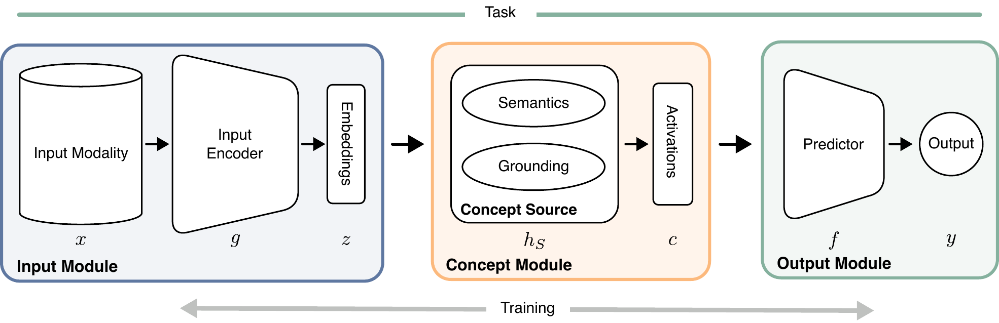
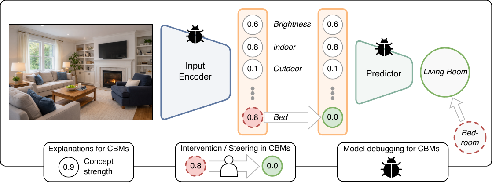
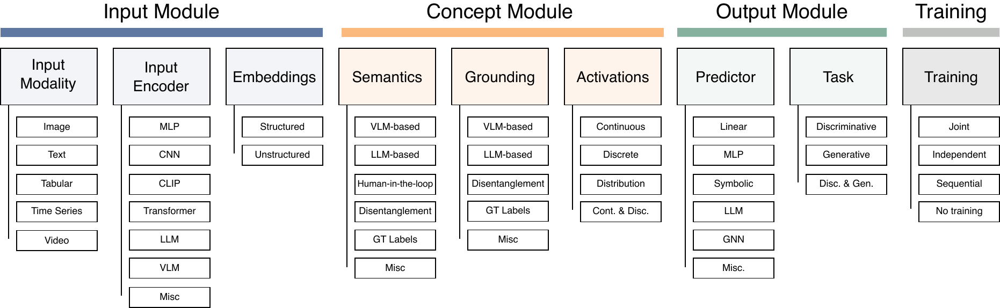

2020foundation
Concept Bottleneck Models
Introduces the canonical two-stage architecture and the idea of test-time concept intervention.
paper ↗Survey and roadmap · TMLR 2026
A survey of Concept Bottleneck Models (CBMs), their architectural choices, and the open problems that determine whether concept-based reasoning is interpretable and reliable.

A CBM maps an input x to human-understandable concepts c and uses those concepts to produce the output y. This explicit interface supports inspection of the predicted concepts, interventions that replace concept values and steer the output, and debugging when the concept representation or prediction is wrong.

Taxonomy
The survey separates input, concept, output, and training modules. Within the concept module, it distinguishes semantics—which concepts are used and what they mean—from grounding—how those concepts are detected and instantiated in the input.

Categorization
Each row assigns a named primary work to the taxonomy dimensions used in the survey. Search and compare modalities, concept sources, representations, predictors, tasks, and training strategies.
| Input module | Concept module | Output module | Training | ||||||
|---|---|---|---|---|---|---|---|---|---|
| Modality | Encoder / embedding | Semantics | Grounding | Activations | Predictor | Task | Strategy | ||
| Concept Bottleneck Models ↗ | 2020 | Image | CNNStructured | GT labels | GT labels | Continuous | Linear | Discriminative | Joint |
| Promises and Pitfalls of Concept Bottleneck Models ↗ | 2021 | Image | CNNStructured | GT labels | GT labels | Continuous | Linear | Discriminative | Joint |
| Addressing Leakage in Concept Bottleneck Models ↗ | 2022 | Image | CNNStructured | GT labels | GT labels | Continuous | Linear | Discriminative | Joint |
| Concept Embedding Models ↗ | 2022 | Image | CNNStructured | GT labels | GT labels | Continuous | MLP | Discriminative | Joint |
| Label-free Concept Bottleneck Models ↗ | 2023 | Image | CLIPUnstructured | VLM-based | VLM-based | Continuous | Linear | Discriminative | Joint |
| Post-hoc Concept Bottleneck Models ↗ | 2023 | Image | CNNStructured | Mixed | VLM-based | Continuous | Linear | Discriminative | Sequential |
| Intervenable and editable CBMs ↗ | 2023+ | Mixed | TransformerUnstructured | LLM-based | VLM-based | Cont. & disc. | MLP | Disc. & gen. | Joint |
| Discovering concepts from data ↗ | 2023+ | Image | VLMUnstructured | VLM-based | Mixed | Continuous | Linear | Discriminative | Joint |
| Beyond complete concept sets ↗ | 2023+ | Image | TransformerStructured | GT labels | GT labels | Distribution | MLP | Discriminative | Joint |
| Evaluating concept-based reasoning ↗ | 2024+ | Mixed | Misc. | Mixed | Mixed | Cont. & disc. | Misc. | Discriminative | Varies |
| Concept-based XAI beyond CBMs ↗ | 2024+ | Mixed | Misc. | Mixed | Mixed | Cont. & disc. | Misc. | Disc. & gen. | Varies |
| What’s in the Bottle? A Survey and Roadmap ↗ | 2026 | Mixed | Misc. | Mixed | Mixed | Cont. & disc. | Misc. | Disc. & gen. | Varies |
| A closer look at the intervention procedure of concept bottleneck models ↗ | 2023 | Image | CNNMisc. | Human-in-the-loop | Human-in-the-loop | Continuous | Linear | Discriminative | Joint |
| Beyond concept bottleneck models: How to make black boxes intervenable? ↗ | 2024 | Image | CNNMisc. | GT Labels | GT Labels | Continuous | Linear | Discriminative | Joint |
| Concept bottleneck generative models ↗ | 2024 | Image | CNNMisc. | GT Labels | GT Labels | Continuous | Linear | Generative | Joint |
| Concept bottleneck model with additional unsupervised concepts ↗ | 2022 | Image | CNNMisc. | Mixed / discovered | Mixed / discovered | Continuous | Linear | Discriminative | Joint |
| Discover-then-name: Task-agnostic concept bottlenecks via automated concept discovery ↗ | 2024 | Image | CNNMisc. | Mixed / discovered | Mixed / discovered | Continuous | Linear | Discriminative | Joint |
| Do concept bottleneck models learn as intended? ↗ | 2021 | Image | CNNMisc. | GT Labels | GT Labels | Continuous | Linear | Discriminative | Joint |
| Energy-based concept bottleneck models: Unifying prediction, concept intervention, and probabilistic interpretations ↗ | 2024 | Image | CNNMisc. | Human-in-the-loop | Human-in-the-loop | Distribution | Linear | Discriminative | Joint |
| Incremental residual concept bottleneck models ↗ | 2024 | Image | CNNMisc. | GT Labels | GT Labels | Continuous | Linear | Discriminative | Sequential |
| Interpretable concept-based memory reasoning ↗ | 2024 | Image | CNNMisc. | GT Labels | GT Labels | Continuous | MLP | Discriminative | Joint |
| Interpretable neural-symbolic concept reasoning ↗ | 2023 | Image | GNNMisc. | Disentanglement | Disentanglement | Continuous | Symbolic | Discriminative | Joint |
| Interpreting clip with sparse linear concept embeddings (splice) ↗ | 2024 | Image | VLMMisc. | VLM-based | VLM-based | Continuous | MLP | Discriminative | Joint |
| Language in a bottle: Language model guided concept bottlenecks for interpretable image classification ↗ | 2023 | Text | LLMMisc. | LLM-based | LLM-based | Continuous | LLM | Discriminative | Joint |
| Learning to intervene on concept bottlenecks ↗ | 2024 | Image | CNNMisc. | GT Labels | GT Labels | Continuous | Linear | Discriminative | Joint |
| Object Centric Concept Bottlenecks ↗ | 2025 | Image | CNNMisc. | GT Labels | GT Labels | Continuous | Linear | Discriminative | Joint |
| Relational confcept bottleneck models ↗ | 2024 | Image | GNNMisc. | Disentanglement | Disentanglement | Continuous | Linear | Discriminative | Joint |
| Stochastic concept bottleneck models ↗ | 2024 | Image | CNNMisc. | GT Labels | GT Labels | Distribution | Linear | Discriminative | Joint |
| TabCBM: Concept-based Interpretable Neural Networks for Tabular Data ↗ | 2023 | Tabular | CNNMisc. | GT Labels | GT Labels | Continuous | Linear | Discriminative | Joint |
| Adacbm: An adaptive concept bottleneck model for explainable and accurate diagnosis ↗ | 2024 | Image | CNNMisc. | GT Labels | GT Labels | Continuous | Linear | Discriminative | Joint |
| An Analysis of Concept Bottleneck Models: Measuring, Understanding, and Mitigating the Impact of Noisy Annotations ↗ | 2025 | Image | CNNMisc. | GT Labels | GT Labels | Continuous | Linear | Discriminative | Joint |
| Bayesian concept bottleneck models with llm priors ↗ | 2025 | Text | LLMMisc. | LLM-based | LLM-based | Distribution | LLM | Discriminative | Joint |
| PCBEAR: Pose Concept Bottleneck for Explainable Action Recognition ↗ | 2025 | Video | CNNMisc. | GT Labels | GT Labels | Continuous | Linear | Discriminative | Joint |
| Coarse-to-fine concept bottleneck models ↗ | 2024 | Image | CNNMisc. | GT Labels | GT Labels | Continuous | Linear | Discriminative | Joint |
| Concept Bottleneck Large Language Models ↗ | 2025 | Text | LLMMisc. | LLM-based | LLM-based | Continuous | LLM | Generative | Joint |
| Concept bottleneck with visual concept filtering for explainable medical image classification ↗ | 2023 | Image | CNNMisc. | VLM-based | VLM-based | Continuous | Linear | Discriminative | Joint |
| Concepts in Motion: Temporal Bottlenecks for Interpretable Video Classification ↗ | 2025 | Video | TransformerMisc. | GT Labels | GT Labels | Continuous | Linear | Discriminative | Joint |
| CONDA: Adaptive Concept Bottleneck for Foundation Models Under Distribution Shifts ↗ | 2025 | Mixed | CNNMisc. | GT Labels | GT Labels | Distribution | Linear | Discriminative | Joint |
| Counterfactual concept bottleneck models ↗ | 2025 | Image | CNNMisc. | GT Labels | GT Labels | Continuous | Linear | Discriminative | Joint |
| DCBM: Data-Efficient Visual Concept Bottleneck Models ↗ | 2025 | Image | CNNMisc. | VLM-based | VLM-based | Continuous | Linear | Discriminative | Joint |
| Measuring leakage in concept-based methods: An information theoretic approach ↗ | 2025 | Image | CNNMisc. | GT Labels | GT Labels | Continuous | Linear | Discriminative | Joint |
| FaCT: Faithful Concept Traces for Explaining Neural Network Decisions ↗ | 2025 | Image | CNNMisc. | GT Labels | GT Labels | Continuous | Linear | Discriminative | Joint |
| Deferring Concept Bottleneck Models: Learning to Defer Interventions to Inaccurate Experts ↗ | 2025 | Image | CNNMisc. | Human-in-the-loop | Human-in-the-loop | Continuous | Linear | Discriminative | Joint |
| Graph integrated multimodal concept bottleneck model ↗ | 2025 | Mixed | GNNMisc. | GT Labels | GT Labels | Continuous | GNN | Discriminative | Joint |
| Disentangled Concepts Speak Louder Than Words: Explainable Video Action Recognition ↗ | 2025 | Video | TransformerMisc. | Disentanglement | Disentanglement | Continuous | Linear | Discriminative | Joint |
| Graph of thoughts: Solving elaborate problems with large language models ↗ | 2024 | Text | LLMMisc. | LLM-based | LLM-based | Continuous | GNN | Generative | Joint |
| Tree of thoughts: Deliberate problem solving with large language models ↗ | 2023 | Text | LLMMisc. | LLM-based | LLM-based | Continuous | LLM | Generative | Joint |
| Object-centric learning with slot attention ↗ | 2020 | Image | TransformerMisc. | GT Labels | GT Labels | Continuous | Linear | Discriminative | Joint |
| Chain-of-thought prompting elicits reasoning in large language models ↗ | 2022 | Text | LLMMisc. | LLM-based | LLM-based | Continuous | LLM | Generative | Joint |
| The information bottleneck method ↗ | 2000 | Image | CNNMisc. | GT Labels | GT Labels | Continuous | Linear | Discriminative | Joint |
| Transparency and the black box problem: Why we do not trust AI ↗ | 2021 | Other | Misc.Misc. | GT Labels | GT Labels | Continuous | Linear | Discriminative | Joint |
| Attention is all you need ↗ | 2017 | Other | TransformerMisc. | GT Labels | GT Labels | Continuous | Linear | Discriminative | Joint |
| Hi Robot: Open-Ended Instruction Following with Hierarchical Vision-Language-Action Models ↗ | 2025 | Text | VLMMisc. | VLM-based | VLM-based | Continuous | Linear | Discriminative | Joint |
| Vision-Language-Action Model with Open-World Embodied Reasoning from Pretrained Knowledge ↗ | 2025 | Text | VLMMisc. | VLM-based | VLM-based | Continuous | Linear | Discriminative | Joint |
| Object-Centric Representation Learning for Enhanced 3D Semantic Scene Graph Prediction ↗ | 2025 | Image | GNNMisc. | Disentanglement | Disentanglement | Continuous | GNN | Discriminative | Joint |
| Learning Object-Centric Representations of Multi-Object Scenes from Multiple Views ↗ | 2020 | Image | CNNMisc. | GT Labels | GT Labels | Continuous | Linear | Discriminative | Joint |
| Erasing Concepts from Diffusion Models ↗ | 2023 | Image | CNNMisc. | GT Labels | GT Labels | Continuous | Linear | Generative | Joint |
| Ablating Concepts in Text-to-Image Diffusion Models ↗ | 2023 | Image | CNNMisc. | GT Labels | GT Labels | Continuous | Linear | Generative | Joint |
| Do Concept Bottleneck Models Obey Locality? ↗ | 2023 | Image | CNNMisc. | GT Labels | GT Labels | Continuous | Linear | Discriminative | Joint |
| Locality-aware Concept Bottleneck Model ↗ | 2024 | Image | CNNMisc. | GT Labels | GT Labels | Continuous | Linear | Discriminative | Joint |
| From Segments to Concepts: Interpretable Image Classification via Concept-Guided Segmentation ↗ | 2025 | Image | CNNMisc. | GT Labels | GT Labels | Continuous | Linear | Discriminative | Joint |
| Hybrid Concept Bottleneck Models ↗ | 2025 | Image | CNNMisc. | GT Labels | GT Labels | Cont. & Disc. | Linear | Discriminative | Joint |
| Interactive concept bottleneck models ↗ | 2023 | Image | CNNMisc. | Human-in-the-loop | Human-in-the-loop | Continuous | Linear | Discriminative | Joint |
| LogicCBMs: Logic-Enhanced Concept-Based Learning ↗ | 2025 | Image | GNNMisc. | Disentanglement | Disentanglement | Discrete | Symbolic | Discriminative | Joint |
| Partially Shared Concept Bottleneck Models ↗ | 2025 | Image | CNNMisc. | GT Labels | GT Labels | Cont. & Disc. | Linear | Discriminative | Joint |
| Selective Concept Bottleneck Models Without Predefined Concepts ↗ | 2025 | Image | CNNMisc. | Mixed / discovered | Mixed / discovered | Continuous | Linear | Discriminative | Joint |
| Show and Tell: Visually Explainable Deep Neural Nets via Spatially-Aware Concept Bottleneck Models ↗ | 2025 | Image | CNNMisc. | VLM-based | VLM-based | Continuous | Linear | Discriminative | Joint |
| Uncertainty-Aware Concept Bottleneck Models with Enhanced Interpretability ↗ | 2025 | Image | CNNMisc. | GT Labels | GT Labels | Distribution | Linear | Discriminative | Joint |
| V2C-CBM: Building Concept Bottlenecks with Vision-to-Concept Tokenizer ↗ | 2025 | Image | CNNMisc. | GT Labels | GT Labels | Continuous | Linear | Discriminative | Joint |
| Vlg-cbm: Training concept bottleneck models with vision-language guidance ↗ | 2024 | Text | VLMMisc. | VLM-based | VLM-based | Continuous | Linear | Discriminative | Joint |
| Atlas-Alignment: Making Interpretability Transferable Across Language Models ↗ | 2025 | Text | LLMMisc. | LLM-based | LLM-based | Continuous | LLM | Discriminative | Joint |
| Explainable Visual Anomaly Detection via Concept Bottleneck Models ↗ | 2025 | Image | CNNMisc. | VLM-based | VLM-based | Continuous | Linear | Discriminative | Joint |
| Improving intervention efficacy via concept realignment in concept bottleneck models ↗ | 2024 | Image | CNNMisc. | Human-in-the-loop | Human-in-the-loop | Continuous | Linear | Discriminative | Joint |
| Sub: Benchmarking cbm generalization via synthetic attribute substitutions ↗ | 2025 | Image | CNNMisc. | GT Labels | GT Labels | Continuous | Linear | Discriminative | Joint |
| Interpretable and Steerable Concept Bottleneck Sparse Autoencoders ↗ | 2025 | Image | CNNMisc. | GT Labels | GT Labels | Continuous | Linear | Discriminative | Joint |
| A two-step concept-based approach for enhanced interpretability and trust in skin lesion diagnosis ↗ | 2025 | Image | CNNMisc. | GT Labels | GT Labels | Continuous | Linear | Discriminative | Joint |
| CBVLM: Training-free Explainable Concept-based Large Vision Language Models for Medical Image Classification ↗ | 2025 | Text | VLMMisc. | LLM-based | LLM-based | Continuous | LLM | Discriminative | No training |
| Chat-CBM: Towards Interactive Concept Bottleneck Models with Frozen Large Language Models ↗ | 2025 | Text | LLMMisc. | LLM-based | LLM-based | Continuous | LLM | Generative | No training |
| Concept bottleneck language models for protein design ↗ | 2025 | Text | LLMMisc. | LLM-based | LLM-based | Continuous | LLM | Generative | Joint |
| Concept graph embedding models for enhanced accuracy and interpretability ↗ | 2024 | Image | GNNMisc. | Disentanglement | Disentanglement | Continuous | GNN | Discriminative | Joint |
| Concept-centric transformers: Enhancing model interpretability through object-centric concept learning within a shared global workspace ↗ | 2024 | Image | TransformerMisc. | GT Labels | GT Labels | Continuous | Linear | Discriminative | Joint |
| Continual learning for unsupervised concept bottleneck discovery ↗ | 2024 | Image | CNNMisc. | Mixed / discovered | Mixed / discovered | Continuous | Linear | Discriminative | Sequential |
| Coreset Selection via LLM-based Concept Bottlenecks ↗ | 2025 | Text | LLMMisc. | LLM-based | LLM-based | Continuous | LLM | Discriminative | Joint |
| DeCoDe: Defer-and-Complement Decision-Making via Decoupled Concept Bottleneck Models ↗ | 2025 | Image | CNNMisc. | GT Labels | GT Labels | Continuous | Linear | Discriminative | Joint |
| Editable concept bottleneck models ↗ | 2024 | Image | CNNMisc. | GT Labels | GT Labels | Continuous | Linear | Discriminative | Joint |
| Enhancing Interpretable Image Classification Through LLM Agents and Conditional Concept Bottleneck Models ↗ | 2025 | Text | LLMMisc. | LLM-based | LLM-based | Continuous | LLM | Discriminative | Joint |
| EQ-CBM: A Probabilistic Concept Bottleneck with Energy-based Models and Quantized Vectors ↗ | 2024 | Image | CNNMisc. | GT Labels | GT Labels | Distribution | Linear | Discriminative | Joint |
| A Probabilistic Hard Concept Bottleneck for Steerable Generative Models ↗ | 2026 | Image | CNNMisc. | GT Labels | GT Labels | Distribution | Linear | Generative | Joint |
| Explain via any concept: Concept bottleneck model with open vocabulary concepts ↗ | 2024 | Image | CNNMisc. | Mixed / discovered | Mixed / discovered | Continuous | Linear | Discriminative | Joint |
| The caltech-ucsd birds-200-2011 dataset ↗ | 2011 | Other | Misc.Misc. | GT Labels | GT Labels | Continuous | Linear | Discriminative | Joint |
| Explanation Bottleneck Models ↗ | 2025 | Image | CNNMisc. | GT Labels | GT Labels | Continuous | Linear | Discriminative | Joint |
| Flexible Concept Bottleneck Model ↗ | 2025 | Image | CNNMisc. | GT Labels | GT Labels | Continuous | Linear | Discriminative | Joint |
| Glancenets: Interpretable, leak-proof concept-based models ↗ | 2022 | Image | CNNMisc. | GT Labels | GT Labels | Continuous | Linear | Discriminative | Joint |
| Graph concept bottleneck models ↗ | 2025 | Image | GNNMisc. | GT Labels | GT Labels | Continuous | GNN | Discriminative | Joint |
| Interpretable concept bottlenecks to align reinforcement learning agents ↗ | 2024 | Image | CNNMisc. | GT Labels | GT Labels | Continuous | Linear | Discriminative | Joint |
| Grounding dino: Marrying dino with grounded pre-training for open-set object detection ↗ | 2024 | Image | CNNMisc. | GT Labels | GT Labels | Continuous | Linear | Discriminative | Joint |
| Interpreting pretrained language models via concept bottlenecks ↗ | 2024 | Text | LLMMisc. | LLM-based | LLM-based | Continuous | LLM | Discriminative | Joint |
| Learning concise and descriptive attributes for visual recognition ↗ | 2023 | Image | CNNMisc. | VLM-based | VLM-based | Continuous | Linear | Discriminative | Joint |
| Neural concept binder ↗ | 2024 | Image | CNNMisc. | GT Labels | GT Labels | Continuous | Linear | Discriminative | Joint |
| Neurosymbolic Diffusion Models ↗ | 2025 | Image | Misc.Misc. | Disentanglement | Disentanglement | Continuous | Symbolic | Generative | Joint |
| Process-Guided Concept Bottleneck Model ↗ | 2026 | Image | CNNMisc. | GT Labels | GT Labels | Continuous | Linear | Discriminative | Joint |
| Restyling unsupervised concept based interpretable networks with generative models ↗ | 2024 | Image | CNNMisc. | Mixed / discovered | Mixed / discovered | Continuous | Linear | Generative | Joint |
| Which lime should i trust? concepts, challenges, and solutions ↗ | 2025 | Image | CNNMisc. | GT Labels | GT Labels | Continuous | Linear | Discriminative | Joint |
| Right for the right concept: Revising neuro-symbolic concepts by interacting with their explanations ↗ | 2021 | Image | CNNMisc. | Disentanglement | Disentanglement | Continuous | Symbolic | Discriminative | Joint |
| Towards Achieving Concept Completeness for Textual Concept Bottleneck Models ↗ | 2025 | Text | LLMMisc. | LLM-based | LLM-based | Continuous | Linear | Discriminative | Joint |
| Towards Better Generalization and Interpretability in Unsupervised Concept-Based Models ↗ | 2025 | Image | CNNMisc. | Mixed / discovered | Mixed / discovered | Continuous | Linear | Discriminative | Joint |
| Towards Reasonable Concept Bottleneck Models ↗ | 2025 | Image | CNNMisc. | GT Labels | GT Labels | Continuous | Linear | Discriminative | Joint |
| Zero-shot Concept Bottleneck Models ↗ | 2025 | Image | CNNMisc. | Mixed / discovered | Mixed / discovered | Continuous | Linear | Discriminative | No training |
| Probabilistic concept bottleneck models ↗ | 2023 | Image | CNNMisc. | GT Labels | GT Labels | Distribution | Linear | Discriminative | Joint |
| Towards Multi-Label Concept Bottleneck Models in Medical Imaging: An Exploratory Survey ↗ | 2026 | Image | CNNMisc. | GT Labels | GT Labels | Continuous | Linear | Discriminative | Joint |
| Interactive Medical Image Analysis with Concept-based Similarity Reasoning ↗ | 2025 | Image | CNNMisc. | Human-in-the-loop | Human-in-the-loop | Continuous | Linear | Discriminative | Joint |
| Semi-supervised concept bottleneck models ↗ | 2025 | Image | CNNMisc. | GT Labels | GT Labels | Continuous | Linear | Discriminative | Sequential |
| Learning bottleneck concepts in image classification ↗ | 2023 | Image | CNNMisc. | GT Labels | GT Labels | Continuous | Linear | Discriminative | Joint |
| Towards interpretable radiology report generation via concept bottlenecks using a multi-agentic rag ↗ | 2025 | Image | LLMMisc. | LLM-based | LLM-based | Continuous | Linear | Generative | Joint |
| Concept complement bottleneck model for interpretable medical image diagnosis ↗ | 2024 | Image | CNNMisc. | GT Labels | GT Labels | Continuous | Linear | Discriminative | Joint |
| A theoretical design of concept sets: improving the predictability of concept bottleneck models ↗ | 2024 | Image | CNNMisc. | GT Labels | GT Labels | Continuous | Linear | Discriminative | Joint |
| Causally reliable concept bottleneck models ↗ | 2025 | Image | CNNMisc. | GT Labels | GT Labels | Continuous | Linear | Discriminative | Joint |
| Learning optimal summaries of clinical time-series with concept bottleneck models ↗ | 2022 | Time Series | CNNMisc. | GT Labels | GT Labels | Continuous | Linear | Discriminative | Joint |
| Interpretability for Time Series Transformers using A Concept Bottleneck Framework ↗ | 2024 | Time Series | TransformerMisc. | GT Labels | GT Labels | Continuous | Linear | Discriminative | Joint |
| Learning to receive help: Intervention-aware concept embedding models ↗ | 2023 | Image | CNNMisc. | Human-in-the-loop | Human-in-the-loop | Continuous | MLP | Discriminative | Joint |
| Evidential Concept Embedding Models: Towards Reliable Concept Explanations for Skin Disease Diagnosis ↗ | 2024 | Image | CNNMisc. | GT Labels | GT Labels | Distribution | MLP | Discriminative | Joint |
| MVP-CBM: Multi-layer Visual Preference-enhanced Concept Bottleneck Model for Explainable Medical Image Classification ↗ | 2025 | Image | CNNMisc. | VLM-based | VLM-based | Continuous | Linear | Discriminative | Joint |
| Aligning Human Knowledge with Visual Concepts Towards Explainable Medical Image Classification ↗ | 2024 | Image | CNNMisc. | VLM-based | VLM-based | Continuous | Linear | Discriminative | Joint |
| CLIP-QDA: An Explainable Concept Bottleneck Model ↗ | 2024 | Image | VLMMisc. | VLM-based | VLM-based | Continuous | Linear | Discriminative | Joint |
| Addressing Concept Mislabeling in Concept Bottleneck Models Through Preference Optimization ↗ | 2025 | Image | CNNMisc. | Human-in-the-loop | Human-in-the-loop | Continuous | Linear | Discriminative | Joint |
| Towards multi-dimensional explanation alignment for medical classification ↗ | 2024 | Image | CNNMisc. | GT Labels | GT Labels | Continuous | Linear | Discriminative | Joint |
| Faithful Vision-Language Interpretation via Concept Bottleneck Models ↗ | 2024 | Text | VLMMisc. | VLM-based | VLM-based | Continuous | Linear | Discriminative | Joint |
| Interactive Disentanglement: Learning Concepts by Interacting with their Prototype Representations ↗ | 2022 | Image | CNNMisc. | Human-in-the-loop | Human-in-the-loop | Continuous | Linear | Discriminative | Joint |
| Insight: Interpretable Semantic Hierarchies in Vision-Language Encoders ↗ | 2026 | Text | VLMMisc. | VLM-based | VLM-based | Continuous | Linear | Discriminative | Joint |
| Semantic bottlenecks: Quantifying and improving inspectability of deep representations ↗ | 2021 | Image | CNNMisc. | Disentanglement | Disentanglement | Continuous | Linear | Discriminative | Joint |
| Controllable Concept Bottleneck Models ↗ | 2026 | Image | CNNStructured | Human-in-the-loop | Human-in-the-loop | Continuous | Linear | Discriminative | Post-hoc |
| Concepts’ Information Bottleneck Models ↗ | 2026 | Image | CNNStructured | GT labels | GT labels | Distribution | Linear | Discriminative | Joint |
| Rethinking Concept Bottleneck Models: From Pitfalls to Solutions ↗ | 2026 | Image | ViTVLM | Mixed / discovered | Mixed / discovered | Continuous | MLP | Discriminative | Joint |
| Matryoshka Concept Bottleneck Models ↗ | 2026 | Image | CNNStructured | GT labels | GT labels | Continuous | Linear | Discriminative | Joint |
| Post-hoc Stochastic Concept Bottleneck Models ↗ | 2026 | Image | CNNStructured | GT labels | GT labels | Distribution | Linear | Discriminative | Post-hoc |
| Simulating Concept Bottlenecks with Vision-Language Models ↗ | 2026 | Image | VLMUnstructured | LLM-based | VLM-based | Structured | MLP | Discriminative | Joint |
| Partially Shared Concept Bottleneck Models ↗ | 2026 | Image | VLMStructured | VLM-based | VLM-based | Continuous | Linear | Discriminative | Joint |
| Scaling Inherently Interpretable Language Models ↗ | 2026 | Text | TransformerUnstructured | LLM-based | Mixed | Cont. & disc. | Transformer | Generative | Joint |
Development of the field
The literature begins with supervised visual prediction and progressively changes the concept representation, concept source, intervention mechanism, and task setting.
Koh et al. introduce the two-stage CBM formulation and demonstrate it on x-ray grading and bird identification, with concepts mediating the final prediction.
Subsequent work examines concept quality, information leakage, label noise, and the relation between concept accuracy and task performance.
Methods modify concept representations, concept sources, intervention mechanisms, and training procedures, including label-free and multimodal variants.
Recent work applies concept-based interfaces to language and generative models and to modalities beyond the original image-classification setting.
Challenges and open problems
The points below are only a fraction of the challenges discussed in the paper. The survey groups open problems around concept-module design, model reliability, and the validation and scope of CBMs.
Which concepts should be selected, who defines them, and how should their meaning be specified? Expert concepts are costly; discovered concepts may be unstable or difficult to interpret.
Does an activation correspond to the relevant evidence in the input, or can the model obtain the correct label through a shortcut?
Concept representations must be expressive enough for the task while remaining human-understandable. Incomplete concept sets may omit task-relevant information.
Residual pathways and expressive predictors can carry information outside the intended concept path, weakening selective interpretability.
A useful intervention requires calibrated concept predictions and a predictable downstream effect, not only a change in a concept score.
Evaluation must distinguish predictive accuracy, concept quality, faithfulness, intervention behavior, and performance across domains and distribution shifts.
Citation
Use the BibTeX entry below when referring to the survey and its taxonomy.
@article{
knab2026whats,
title={What{\textquoteright}s in the Bottle? A Survey and Roadmap of Concept Bottleneck Models},
author={Patrick Knab and David Steinmann and Christian Bartelt and Kristian Kersting and Bernt Schiele and Thomas Seidl and Udo Schlegel and Wolfgang Stammer},
journal={Transactions on Machine Learning Research},
issn={2835-8856},
year={2026},
url={https://openreview.net/forum?id=IF5vnqxBEW},
note={}
}The matrix is a selected, searchable view of the categorization presented in the survey.
Contribute to the index
Add a paper and classify it using the survey taxonomy. Submitting opens a pre-filled email draft addressed to patrick.knab@tu-clausthal.de; the site does not send anything automatically.